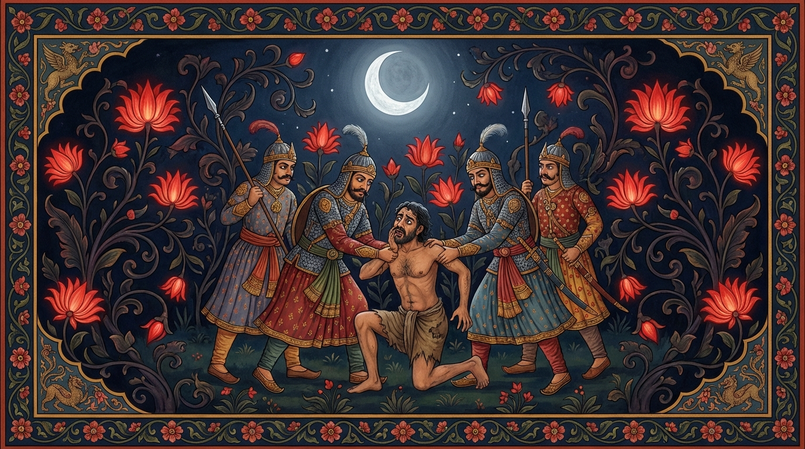

7. පුප්ඵරත්ත ජාතකය (147)
“නයිදං දුක්ඛං අදුං දුක්ඛං” (මේ දුක දුකක් නොවේ, අර දුකයි දුක) යන මේ ජාතක දේශනාව බුදුරජාණන් වහන්සේ ජේතවනාරාමයේ වැඩවසන සමයෙහි එක්තරා උකටලී වූ (කලකිරුණු) භික්ෂුවක් අරබයා දේශනා කළ සේක. බුදුරජාණන් වහන්සේ ඒ භික්ෂුවගෙන් “සැබෑද භික්ෂුව, ඔබ උකටලී වී සිටින්නේ?” යැයි විමසූ කල්හි “එසේය ස්වාමීනි, සැබෑය” යැයි පිළිතුරු දුන් අතර, “කවුරුන් නිසා ඔබ කලකිරුණේදැයි” විමසූ විට, “පෙර ගිහි කල බිරිඳ නිසාය” යැයි පවසා, “ස්වාමීනි, ඒ ස්ත්රිය මිහිරි අත් රස (රසවත් ආහාර පිසීමේ හැකියාව) ඇත්තියක්, ඇය නොමැතිව විසීමට මට නොහැකිය” යැයි පැවසීය. එවිට ශාස්තෲන් වහන්සේ “භික්ෂුව, ඒ ස්ත්රිය ඔබට අනර්ථකාරී ය. පෙරත් ඔබ ඇය නිසා හුලෙහි තබන ලද්දේ, ඇයවම පතමින් මියගොස් නිරයේ උපන්නේය. දැන් කුමක් නිසා නැවතත් ඇයවම පතන්නෙහිද?” යැයි වදාරා අතීත කතාව ගෙනහැර දැක්වූ සේක.
අතීතයේ බරණැස් නුවර බ්රහ්මදත්ත රජු රාජ්ය කරන සමයේ බෝධිසත්වයෝ ආකාශස්ථ දේවතාවෙක් වී උපන්හ. එකල බරණැස් නුවර කාර්තික නැකැත් උත්සවය පැමිණියේය. නගරය දෙව්පුරයක් මෙන් අලංකාර කළහ. සියලු ජනයා සැණකෙළි කෙළින්නට වූහ. එක් දුගී මිනිසෙකුට තිබුණේ ඝන (රළු) සළු යුවළක් පමණි. ඔහු එය මනාව සෝදවා, නමා, සියයක් දහසක් රැළි සිටින සේ සකසා තැබීය. එකල්හි ඔහුගේ බිරිඳ මෙසේ කීවාය: “ස්වාමීනි, මම කුසුම්භ මලින් (වණුක් මලින්) රක්ත වර්ණ ගැන්වූ වස්ත්රයක් හැඳ, එකක් පොරවා, ඔබගේ ගෙළ වැළඳගෙන කාර්තික නැකැත් උත්සවයේ හැසිරෙනු කැමැත්තෙමි.” “සොඳුර, අප වැනි දිළින්දන්ට කුසුම්භ වර්ණ කොයින්ද? පිරිසිදු සුදු වස්ත්රයක් හැඳ ක්රීඩා කරන්න.” “කුසුම්භ වර්ණ වස්ත්රයක් නොලැබුණොත් මම සැණකෙළියට සහභාගී නොවෙමි. ඔබ වෙනත් ස්ත්රියක් රැගෙන ක්රීඩා කරන්න” යැයි ඇය කීවාය. “සොඳුර, මාව පීඩාවට පත් කරන්නේ ඇයි? අපට කුසුම්භ වර්ණ කොයින්ද?” “ස්වාමීනි, පුරුෂයෙකුට කැමැත්ත ඇති නම් නොකළ හැක්කක් නැත. රජතුමාගේ කුසුම්භ වත්තේ බොහෝ කුසුම්භ මල් ඇත.” “සොඳුර, ඒ ස්ථානය යකුන් අරක් ගත් පොකුණක් මෙන් ඉතා දැඩි ආරක්ෂාව ඇත්තකි. එහි ළං වීමටවත් නොහැකිය. ඔබට ඒ ආශාව එපා. ලද දෙයින් සතුටු වන්න.” “ස්වාමීනි, රාත්රී කාලයේ අන්ධකාරය ඇති කල්හි පුරුෂයෙකුට යා නොහැකි තැනක් නැත.” මෙසේ ඇය නැවත නැවතත් ඇවිටිලි කරන කල්හි, ක්ලේශ වසඟයට ගිය ඔහු ඇයගේ වචනය පිළිගෙන “හොඳයි සොඳුර, කරදර නොවන්න” යැයි ඇයව සනසා, රාත්රී කාලයේ ජීවිතය ගැන නොසිතා නගරයෙන් පිටවී රජුගේ කුසුම්භ උයනට ගොස්, වැට කඩා උයන තුළට පිවිසියේය. ආරක්ෂක පුරුෂයෝ වැට බිඳෙන හඬ අසා “සොරෙක්, සොරෙක්” යැයි කෑගසා, වටලා, ඔහු අල්ලාගෙන, බැණ වැදී, තළා පෙළා, ගැටගසා, පහන් වූ පසු රජුට දැක්වූහ. රජතුමා “යව්, මොහු උල තබව්” යැයි නියෝග කළේය. ඉක්බිති ඔහු පිට අත්ල ගැටගසා, වධ බෙර වයමින් නගරයෙන් පිටතට ගෙන ගොස් උල තැබූහ. බලවත් වේදනාවන් ඇති විය. කවුුඩෝ හිස මත ලැග, හෙල්ල තුඩක් වැනි හොටින් ඇස් විදින්නට වූහ.

ඔහු තමා විඳින ඒ සා මහත් දුක ගැන මෙනෙහි නොකොට, එම ස්ත්රියවම සිහි කරමින්, “ඝන වූ කුසුම්භ පුෂ්ප රක්ත වර්ණ වස්ත්රයක් හැඳ, මගේ ගෙළ වටා අත් යුවළක් යවාගෙන ඇය හා එක්ව කාර්තික රාත්රී සැණකෙළිය පැවැත්වීමේ අවස්ථාව මට මඟ හැරුණේය” යැයි සිතා මෙම ගාථාව පැවසීය.
“කවුඩෙක් මට තුඩින් ඇනීම යනු මේ දුකක් නොවේ.
එහෙත් සාමා තොමෝ කුසුම්භ පුෂ්පයෙන් රක්ත වර්ණ කළ වස්ත්ර
හැඳ,
කාර්තික උත්සවය නොවිඳින්නී ද,
අන්න එය (මට) දුකකි.”
එහි නයිදං දුක්ඛං අදුං දුක්ඛං, යං මං තුදති වායසො යන්නෙහි අර්ථය නම්: හුලෙහි ඇමිණීම ප්රත්ය කොටගෙන හටගන්නා වූ යම් කායික චෛතසික දුකක් ඇද්ද, තවද ලෝහමය තුඩක් වැනි හොටින් කවුඩා මට විදින යම් දුකක් ඇද්ද, මේ කිසිවක් මට දුකක් නොවේ. අදුං දුක්ඛං යනු, මෙයම මට දුකක් ය. ඒ කවරේද යත්? යං සාමා පුප්ඵරත්තෙන, කත්තිකං නානුභොස්සතී යනු, යම් ඒ ප්රියංගු (කහ) වන් පාටැති සාමා නම් වූ මගේ භාර්යාව එකක් හැඳ එකක් පොරවා, මෙසේ තද රතු පැහැති වස්ත්ර යුගලයකින් සැරසී මගේ ගෙළ වැළඳගෙන කාර්තික රාත්රී සැණකෙළිය නොවිඳින්නීද, මෙය මට දුකය. එයම මට පීඩා කරයි යන්නයි. ඔහු මෙසේ ස්ත්රියක් අරබයා විලාප නගමින්ම කළුරිය කොට නිරයෙහි උපන්නේය.
ශාස්තෲන් වහන්සේ මේ ධර්ම දේශනාව ගෙනහැර දක්වා ජාතකය සමාධාන කළ සේක: “එකල අඹුසැමි යුවළ වූයේ දැන් මේ අඹුසැමි යුවළයි. ඒ කරුණ සියැසින් දැක සිටි ආකාශස්ථ දේවතාවා නම් මම ම වෙමි.”
සත්වන පුප්ඵරත්ත ජාතක වර්ණනාව නිමියේය.